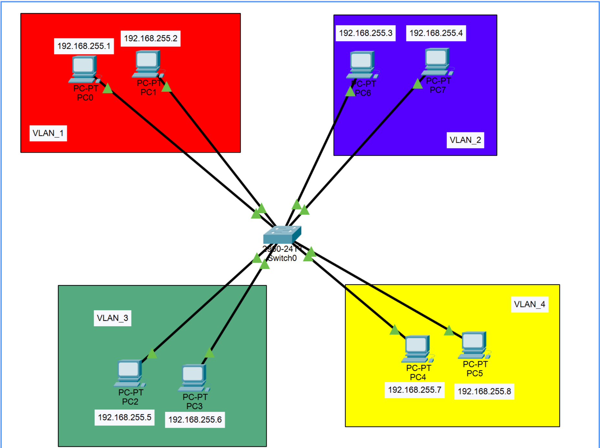

Dans le cadre du cours d'Administration Système et Réseau du BTS SIO, nous avons réalisé un TP sur Cisco Packet Tracer portant sur la création d'un réseau LAN. L'objectif était de concevoir et configurer un réseau local structuré, en intégrant la notion de VLAN (Virtual LAN).
Nous avons appris à segmenter le réseau pour améliorer la sécurité et la gestion du trafic, en configurant les commutateurs, les ports, ainsi que le routage inter-VLAN.
La première étape consiste à placer et relier tous les équipements dans l'espace de travail Packet Tracer, en choisissant les bons modèles Cisco et les bons types de câbles.
Depuis le CLI du Switch, on entre en mode de configuration globale pour déclarer chaque VLAN. Sans cette étape, le switch ne connaît pas les VLANs et ne peut pas segmenter le trafic.
Chaque port connecté à un PC est configuré en mode Access et rattaché à un VLAN précis. Un port Access ne transporte qu'un seul VLAN — le trafic des autres est bloqué.
On répète pour chaque port : fa0/3 → VLAN 30, fa0/4 → VLAN 40.
Chaque PC reçoit une adresse IP statique dans le sous-réseau de son VLAN, avec un plan d'adressage en /24.
La passerelle de chaque PC correspond à la sous-interface du routeur créée à l'étape suivante.
Cette technique permet à un seul routeur de gérer le trafic entre plusieurs VLANs via une unique interface physique. On commence par passer le port du switch relié au routeur en mode Trunk.
Ensuite sur le routeur, on crée une sous-interface par VLAN avec l'encapsulation 802.1Q (dot1Q) :
On répète pour les VLANs 30 et 40, puis on active l'interface principale :
Une fois la configuration terminée, on vérifie depuis le terminal de chaque PC que la segmentation et le routage fonctionnent correctement.

Architecture réseau finale — segmentation VLAN et routage inter-VLAN fonctionnels